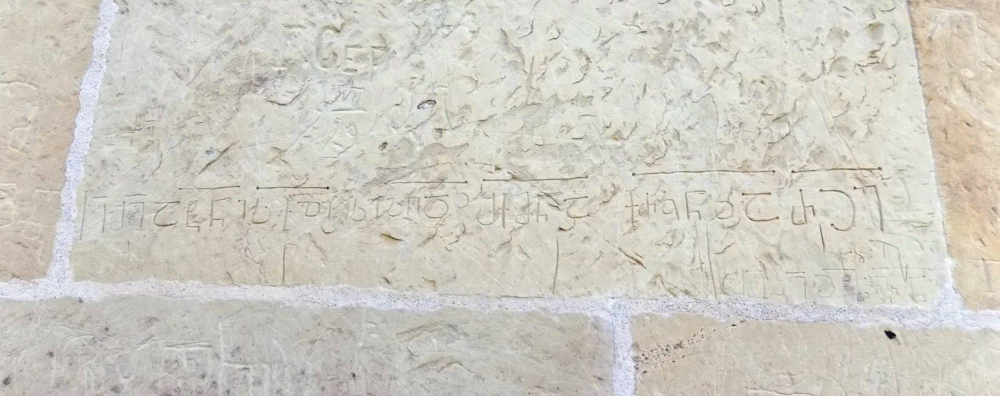

ატენის სიონი, მოსახსენებელი ზღუდის შემქმნელი ხელოსნისა (ატენის სარქალის წარწერა)Memorial inscription of hand craftsman who made the defence wall, Ateni Sioni (I)
ატენის სიონი, მოსახსენებელი ზღუდის შემქმნელი ხელოსნისა (ატენის სარქალის წარწერა)
Memorial inscription of hand craftsman who made the defence wall, Ateni Sioni (I)
შინაარსი / Summary
მოსახსენებელი Memorial
კრიტიკული გამოცემა Interpretive Edition
ქ(რისტ)ე შ(ეიწყალ)ე ატ(ე)ნი ს(არ)ქ(ა)ლი ესე ზღ(უ)დ(ე)ჲ შ(ე)ქმნა ქრ(ონი)კ(ო)ნსა რჲე
დიპლომატიური გამოცემა Diplomatic Edition
ႵႤ ႸႤ ႠႲႬႨ ႱႵႪႨ ႤႱႤ ႦႶႣჂ ႸႵႫႬႠ ႵႰႩႬႱႠ ႰჂႤ

Ateni Sioni
{'ka': 'ქრისტე, შეიწყალე ატენის სარქალი, რომელმაც შექმნა ეს ზღუდე ქორონიკონით 165 წელს.', 'en': 'Christ, have mercy on the chef herdsman of Ateni, who built this wall in 165 according to Choronikon.'}
{'ka': '„ატენის სარქალი“ - ამ ორი სიტყვის წაკითხვა ეკუთვნის გ. აბრამიშვილს.\n წარწერა შესრულებულია ნუსხურნარევი ასომთავრული ანბანით. განკვეთილობის ნიშნები არ ახლავს, მაგრამ ბოლო სამი სიტყვა დაცილებულია ერთმანეთისგან. \n ახლავს თარიღი: ქრონიკონი რჲე. წარწერაში მოყვანილ თარიღს ბროსე ხსნის როგორც 1477 წელს, თუმცა ბარნაველი მიიჩნევს, რომ პალეოგრაფიული მონაცემების მიხედვით (მეათე საუკუნისთვის\n დამახასიათებელი დაბალი, კოხტად მოკალმული ასოები, Ⴀ და Ⴒ ასოების ძლიერ მორკალული და მარჯვნივ გამოზიდული ქვედა კიდური, ასო Ⴢ-ის დაწერილობა, ასოების კიდურების\n ბოლოებში წერტილების ხმარება და ქარაგმის ხაზის გადაშლა მთელ სიტყვებზე) მართებული იქნება წარწერა გადატანილი იქნეს მეცამეტე მოქცევაში, რა შემთხვევაშიც მივიღებთ: \n 165+780=945 წელს.', 'en': 'The reading of these two words as “Ateni herdsman” is proposed by G. Abramishvili. Inscription is in Asomtavruli script mixed with the Nuskhuri alphabet. No sign of separation of the words except the last three words that are distanced from each other. Inscription includes the date - Georgian Chronicle რჲე. Marie Brosset explains that the date named in the inscription corresponds to 1477, while Barnaveli considers that on the basis of paleographic data (low and round shape letters characteristic to X century, Ⴀ and Ⴒ are well circled and lower foot is bended to the right, the letter Ⴢ has dots at the end of the edges and the abbreviation mark is stretched to all over the words) the dating of the inscription should be taken to the 13th cycle in which case we will receive 165+780=945 years.'}
<div type="edition" xml:lang="ka" ana="mtavruli" xml:space="preserve">
<ab>
<lb n="1"/><w lemma="ქრისტე"><expan><abbr>ქ</abbr><ex>რისტ</ex><abbr>ე</abbr></expan></w>
<w lemma="განსუენება"><expan><abbr>გა</abbr><ex>ნ</ex><abbr>ო</abbr><ex>ჳ</ex><abbr>ს</abbr><ex>უ</ex><abbr>ენე</abbr></expan></w>
<w lemma="სულ">სოჳ<lb n="2" break="no"/>ლსა</w>
<name nymRef="ვაჩა">ვაჩაჲს<lb n="3" break="no"/>ასა</name>
<name nymRef="გურა"><expan><abbr>გო</abbr><ex>ჳ</ex><abbr>რაჲ<lb n="4" break="no"/>სასა</abbr></expan></name>
<name nymRef="მირა"><expan><abbr>მ</abbr><ex>ი</ex><abbr>რა</abbr><ex>ჲ</ex><abbr>ს</abbr><ex>ა</ex><abbr>ს</abbr><ex>ა</ex></expan></name>
</ab>
</div>